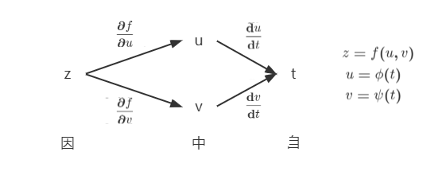
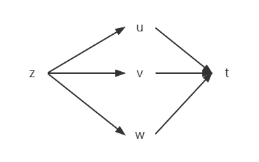
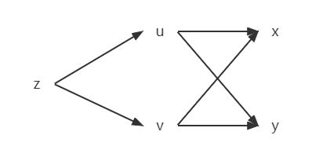
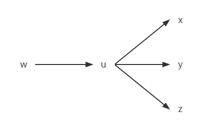
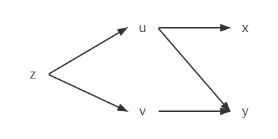
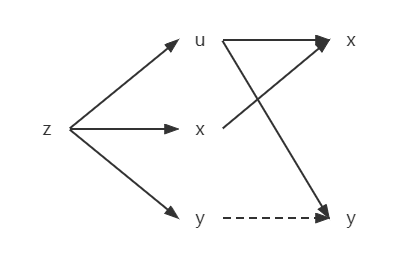

§8.4 复合函数求导
一、多元函数的链式求导法则
1. 中间变量为一元函数

定理：
若 u=ϕ(t)、v=ψ(t) 在 t 处可导，且 z=f(u,v) 在 (u,v) 处偏导连续，则 z=f[ϕ(t),ψ(t)] 在 t 可导，且
dtdz=∂u∂f⋅dtdu+∂v∂f⋅dtdv

z=f(u,v,w)，u=u(t)，v=v(t)，w=w(t) 在 t 处可导，偏导连续，有
dtdz=∂u∂f⋅dtdu+∂v∂f⋅dtdv+∂w∂f⋅dtdw
2. 中间变量为多元函数

若 z=f(u,v) 在 (u,v) 处偏导连续，且 u=ϕ(x,y)、v=ψ(x,y) 在 (x,y) 偏导存在，则 z=f[ϕ(x,y),ψ(x,y)] 在 (x,y) 偏导存在，且
∂x∂z=∂u∂f⋅∂x∂u+∂v∂f⋅∂x∂v∂y∂z=∂u∂f⋅∂y∂u+∂v∂f⋅∂y∂v

w=f(u)，u=u(x,y,z)，有
∂x∂w=dudf⋅∂x∂u∂y∂w=dudf⋅∂y∂u∂z∂w=dudf⋅∂z∂u
3. 中间变量既有一元函数，又有二元函数

z=f[ϕ(x,y),ψ(y)] 在 (x,y) 偏导存在，有
∂x∂z∂y∂z=∂u∂f⋅∂x∂u=∂u∂f⋅∂y∂u+∂v∂f⋅dydv
4. 中间变量也是自变量

若 u=ϕ(x,y) 在 (x,y) 偏导存在，且 z=f(u,x,y) 在 (u,x,y) 偏导连续，则 z=f[ϕ(x,y),x,y] 在 (x,y) 偏导存在
∂x∂z∂y∂z=∂u∂f⋅∂x∂y+∂x∂f⋅dxdx=∂u∂f⋅∂y∂u+∂y∂f⋅1
例题
-
z=x2ey，x=2cost，y=t+sint，求 dtdz
解:
-
法一：
z=(2cost)2et+sint=4cos2tet+sint
dtdz=4⋅[(−2sintcost)et+sint+cos2t(1+cost)et+sint]=−4sin2tet+sint+4cos2t(1+cost)et+sint
-
法二：
dtdz=∂x∂f⋅dtdx+∂y∂f⋅dtdy=2xey⋅(−2sint)+x2ey(1+cost)=2⋅2costet+sint(−2sint)+4cos2tet+sint(1+cost)=−4sin2tet+sint+(4cos2t+4cos3t)et+sint
-
y=xx（x>0），求 dxdy
解:
-
法一：
y=exlnx，dxdy=exlnx(1+lnx)=xx(lnx+1)
-
法二：
y=uv，u=x，v=x
dxdy=∂u∂y⋅dxdu+∂v∂y⋅dxdv=vuv−1⋅1+uvlnu⋅1=xx(lnx+1)
-
z=f(u,v)=⎩⎨⎧u2+v2u2v0(u,v)=(0,0)(u,v)=(0,0)，u=t，v=t，求 dxdz∣t=0
解：【本题不可使用链式法则，因为 f(u,v) 在 (0,0) 偏导不连续】
z=⎩⎨⎧t2+t2t3=2t0t=0t=0
∴z=2t,t∈R
dxdz∣t=0=21
-
z=eucosv，u=2x−y，v=xy，求 ∂x∂z、∂y∂z
解：
-
法1：z=e2x−ycos(xy)，∂x∂z=2e2x−ycos(xy)+e2x−y[−sin(xy)]⋅y，∂y∂z=−e2x−ycos(xy)+e2x−y[−sin(xy)]⋅x
-
法2：
∂x∂z=∂u∂f⋅∂x∂u+∂x∂f⋅∂x∂v=eucosv⋅2+(−sinv)euy=2e2x−ycos(xy)+[−sin(xy)]e2x−yy
∂y∂z=∂u∂f⋅∂y∂u+∂v∂f⋅∂y∂v=eucosv⋅(−1)+eu(−sinv)x=−e2x−ycos(xy)−e2x−ysin(xy)⋅x
-
z=f(x,u)=x2+u，u=cos(xy)，求 ∂x∂z、∂x∂f
解：∂x∂z=∂u∂f⋅∂x∂u+∂x∂f⋅1=1⋅(−sinxy)⋅y+2x，∂x∂f=2x
-
z=f(u,v) 在 (u,v) 偏导连续，求 ∂x∂z、∂y∂z，其中 u=3x+2y，v=x2+y2
解：∂x∂z=∂u∂f⋅3+∂v∂f⋅2x=3f1′+2xf2′，∂y∂z=∂u∂f⋅2+∂v∂f⋅2y=2f1′+2yf2′
6-1 z=f(u,v) 在 (u,v) 二阶偏导也连续，求 ∂x2∂2z、∂y2∂2z、∂x∂y∂2z，其他同上
解：
∂x2∂2z=∂x∂(∂x∂z)=∂x∂(3f1′+2xf2′)=3∂x∂f1′+2(f2′+xf21′′)=3f11′′+2xf21′′
∂y2∂2z=∂y∂(∂y∂z)=∂y∂(2f1′+2yf2′)=2f12′′+2(f2′+yf22′′)=2f12′′+2yf22′′
∂x∂y∂2z=∂y∂(∂x∂z)=∂y∂(3f1′+2xf2′)=3f12′′+2xf22′′
-
z=f(exsiny)，求 ∂x2∂2z、∂x∂y∂2z
解：
∂x∂z=dudf⋅∂x∂u=f′exsiny
∂y∂z=dudf⋅∂y∂u=f′excosy
∂x2∂2z=∂x∂(f′exsiny)=siny[(∂x∂f)′ex+f′ex]=siny(f′′exsiny⋅e2+f′ex)=siny(f′′e2xsiny+f′ex)
∂x∂y∂2z=∂y∂(f′exsiny)=ex[(∂y∂f)′siny+f′cosy]=ex(f′′cosysiny+f′cosy)
-
u=f(x,y) 二阶偏导连续，证明经过 x=ρcosθ、y=ρsinθ 变换后的方程满足如下关系：
- (∂x∂u)2+(∂y∂u)2=(∂ρ∂u)2+ρ21(∂θ∂u)2
- ∂x2∂2u+∂y2∂2y=∂ρ2∂2u+ρ1⋅∂ρ∂u+ρ21(∂θ2∂2u)
解：
∂ρ∂u=∂ρ∂f(ρcosθ,ρsinθ)=f1′cosθ+f2′sinθ
∂θ∂u=∂θ∂f(ρcosθ,ρsinθ)=−ρf1′sinθ+ρf2′cosθ
右边 =(f1′cosθ+f2′sinθ)2+ρ21(−ρf1′sinθ+ρf2′cosθ)=f1′2+f2′2= 左边，1式得证
∂ρ2∂2u=∂ρ∂(∂ρ∂u)=cosθ∂ρ∂f1′+sinθ∂ρ∂f2′=cosθ(f11′′cosθ+f12′′sinθ)+sinθ(f21′′cosθ+f22′′sinθ)=cos2θf11′′+sin2θf12′′+sin2θf12′′
∂θ2∂2u=∂θ∂(∂θ∂u)=∂θ∂(−ρf1′sinθ+ρf2′cosθ)=−ρ[∂θ∂(f1′sinθ)−∂θ∂(f2′cosθ)]=−ρ{∂θ∂f1′sinθ+f1′cosθ−[∂θ∂f2′cosθ+f2′(−sinθ)]}=−ρ[sinθ(−ρf11′′sinθ+ρf12′′cosθ)−cosθ(−ρf21′′sinθ+ρf22′′cosθ)]−ρ⋅∂ρ∂u=ρ2sin2θf11′′+ρ2cos2θf22′′−ρ2sin2θf12′′−ρ⋅∂ρ∂u
右边 =cos2θf11′′+sin2θf22′′+sin2θf12′′+ρ1(f1′cosθ+f2′sinθ)+ρ21(ρ2sin2θf11′′+ρ2cos2θf22′′−ρ2sin2θf12′′−ρ⋅∂ρ∂u)=f11′′+f12′′= 左边，2式得证
二、一阶全微分的形式不变性
z=f(x,y)（x,y 为自变量），dz=∂x∂fdx+∂y∂fdy
x=ϕ(x,t)，y=ψ(s,t)（x,y 为中间变量），
dz=∂s∂zds+∂t∂zdt=(∂x∂f⋅∂s∂ϕ+∂y∂f⋅∂s∂ψ)ds（或(∂x∂f⋅∂t∂ϕ+∂y∂f⋅∂s∂ψ)dt）=∂x∂fdx(∂s∂ϕds+∂t∂ψdt)+∂y∂fdy(∂s∂ϕds+∂t∂ψdt)
例题
-
z=esin(xy)，求 ∂x∂z、∂y∂z
解：
dz=d[esin(xy)]=esin(xy)dsin(xy)=esin(xy)cos(xy)d(xy)=esin(xy)cos(xy)(ydx+xdy)
∂x∂z=y⋅esin(xy)cos(xy)
∂y∂z=x⋅esin(xy)cos(xy)
-
u=f(x,y,z)，y=ϕ(x,t)，t=ψ(x,z)，求 ∂x∂u、∂z∂u
解：
du=df(x,y,z)=f1′dx+f2′dy+f3′dz=f1′dx+f2′dϕ(x,t)+f3′dz=f1′dx+f2′d(ϕ1′dx+ϕ2′dt)+f3′dz=f1′dx+f2′[ϕ1′dx+ϕ2′(ψ1′dx+ψ2′dz)]+f3′dz=(f1′+f2′ϕ1′+f2′ϕ2′ψ1′)dx+(f3′+f2′ϕ2′ψ2′)dz
∂x∂u=f1′+f2′ϕ1′+f2′ϕ2′ψ1′
∂z∂u=f3′+f2′ϕ2′ψ2′